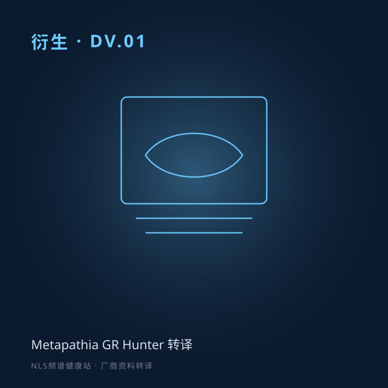

DV.01 Metapathia GR Hunter：NLS 系统介绍
来源：Metapathia GR Hunter (english) · Metatron IPP
将英文资料《Metapathia GR Hunter》整理为中文双人对话，介绍非线性分析系统、量子熵逻辑、触发传感器与多维虚拟可视化等内容。
分段要点
- 00:00开场介绍本期主题与系统概览。
- 01:00生物场与磁场假说用生物场、中医呼应等概念描述技术基础。
- 04:00触发传感器与时间线1988 年触发中心、90 年代临床与商业化版本迭代叙事。
- 07:00多维虚拟可视化立体扫描、血管三维重建、虚拟内窥等应用描述。
#Metapathia#GR Hunter#技术介绍#英文资料整理#NLS#yt2podcast